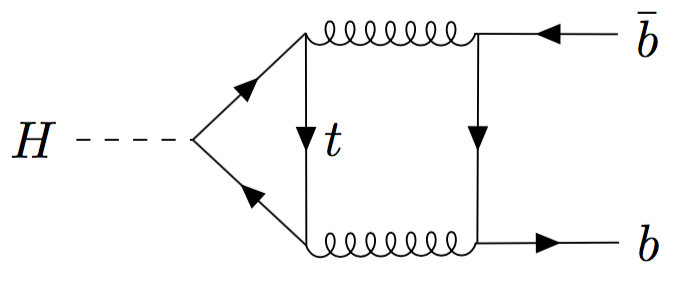
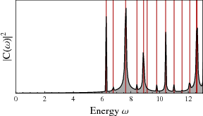
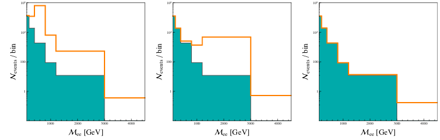
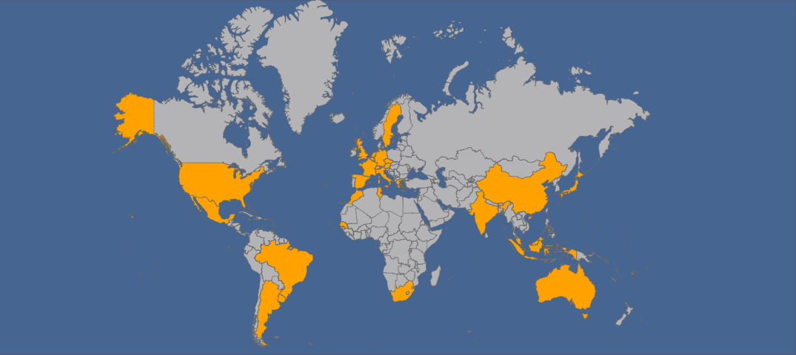

Perturbative QCD
A lot of my current activity is devoted to making accurate theoretical predictions for processes in the Standard Model and beyond. I am currently learning and applying several modern techniques for multi-loop Feynman integral computation such as expansion by region and differential equations under the supervision of Claude Duhr and Fabio Maltoni. Together with Eleni Vryonidou, we are working on obtaining the higher order contributions to several processes of interest for putting constraints on new physics using the precision measurements that will be possible in the future runs of the LHC. Hopefully, I will be able to put more detail on this in some time.
BSM Model-Building
Despite the tremendous success of the Standard Model at particle colliders, we know that our theory for particle interactions is not complete yet. One of the most compelling arguments is the absence of a particle physics explanation for the cosmological observation of Dark Matter. My work in Lyon under Aldo Deandrea's and Giacomo Cacciapaglia's supervision has revolved around finding a theoretically well-motivated model using extra-dimensions to explain the origin of DM. This idea rests on momentum conservation in the extra-dimension stabilizing a neutral Kaluza-Klein particle, which would be our DM. We surveyed homogeneous 6D spaces with positive curvature and built a particle physics model in one of the suitable cases for precise study.
BSM Phenomenology
Confonting models to the experimental reality in a detailed way has become within the reach of theorists thanks to the development of tools that allow a streamlined transition from the blackboard to the data. This has allowed me to study the phenomenology of both complete models, like our extra-dimensional constructions, and of simplified models, to test ideas for new possible signatures at particle colliders. I learned to use a wide variety of tools to recast experimental analyses and constrain our models by recasting several experimental analyses at the LHC, including detector simulation and event selection, and by using measurements of the relic density to put constraints on our Dark Matter model, which involved a careful treatment of coannihilation processes.
Teaching & Outreach
I am a TA at the University of Lyon, I have taught the following classes
- 2013 - Physics lab for 1st year chemistry students (1 semester, electricity and thermodynamics)
- 2015 - Physics lab and exercises for 1st year biology students (1 semester, electricy and optics)
- 2016 - Physics exercises for 1st year physics students (1 semester, optics and mechanics)
- 2016 - Recherche documentaire for 1st year students (1 semester)
I have participated to a science outreach program in French called "En direct du Labo" on Twitter.
My contribution has been storified.
Personal
Kerbal Space Program
I am a huge Kerbal Space Program fan. It is a space simulation video game in wich you build and fly mostly realistic spaceships through a fictional solar system. In particular, I really enjoy two mods: KRPC and KOS, which provide the ability to execute programs that pilot your rocket. I have written several codes for flying spacecraft, which can be found here.
Travel
I really like travelling. I have had the chance to visit a number of countries in my teenage years thanks to my parents and I try to keep seeing more of the world in my adulthood. You will find a map of the countries I have visited below, and here are some of my favorite travel pictures, by me, friends, or family.
